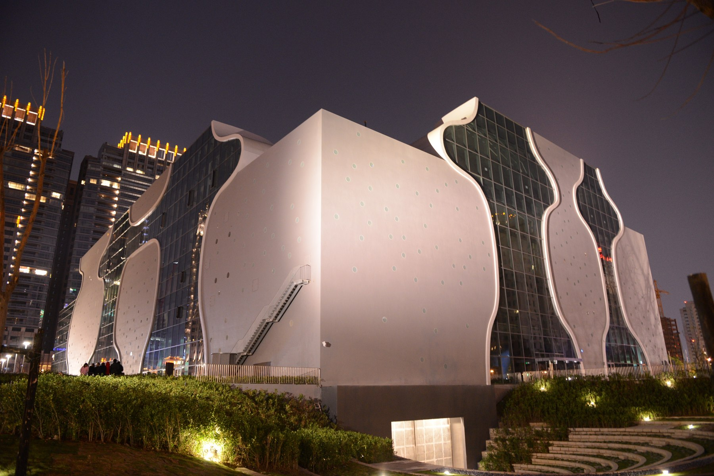
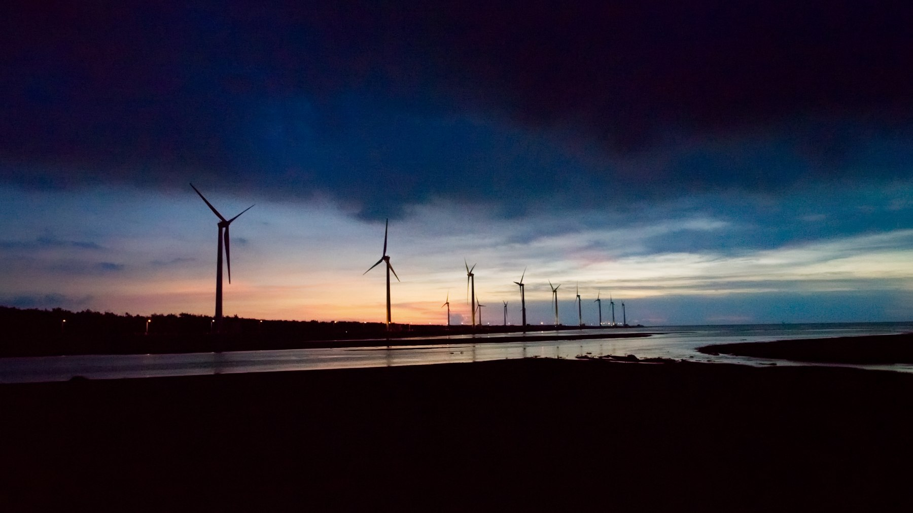
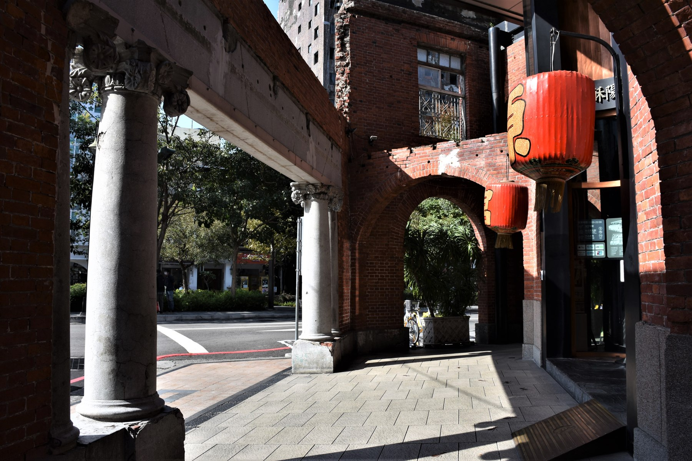
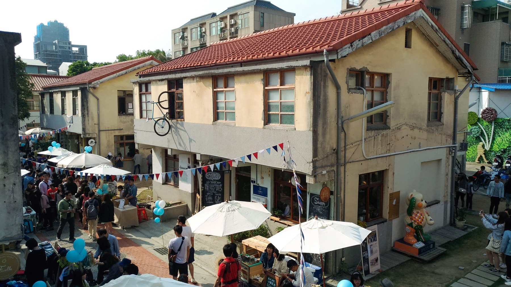

01TAICHUNG, TAIWAN ／ 城市旅行提案
城市與
海風之間四種風景，一座臺中。
從曲線建築走進老屋巷弄，
再把午後留給濕地與海風。
找一個喜歡的角度，認識這座城市。
建築 / 自然 / 老屋 / 文創01 — 04

FOUR PLACES, FOUR PERSPECTIVES
收藏臺中的四種表情
給第一次來臺中的你，
也給想重新認識家附近的你。
02

03
04FIND YOUR WAY
先認識位置，
再決定步調。
宮原眼科、審計新村與歌劇院位於不同市區街區；高美濕地則在清水海線，需另外安排交通。
不必急著一天走完。市區散步與海線看夕陽，可以各留一段完整的時間。
開啟 Google 地圖規劃交通地圖需連線載入；也可點選左側連結查看。
BEFORE YOU GO
留一點彈性，
旅程會更剛好。
四個景點需要一天走完嗎？
不用。這是一份景點選集，並非固定一日遊套裝。可先安排市區的老屋與藝文景點，再把高美濕地排在另一個午後，依交通方式與天氣調整。
交通、票價與營業時間怎麼確認？
展開景點卡片後，可查官方資訊與地圖。館舍、店家、展演和停車收費不同，請以出發當日公告為準，地圖路線也須核對最新班次。
到高美濕地要注意什麼？
先確認天氣、潮汐與木棧道開放狀態。海邊風勢較大，可準備防風外套；在開放區域觀察生態，把垃圾帶走，保留濕地原本的樣子。